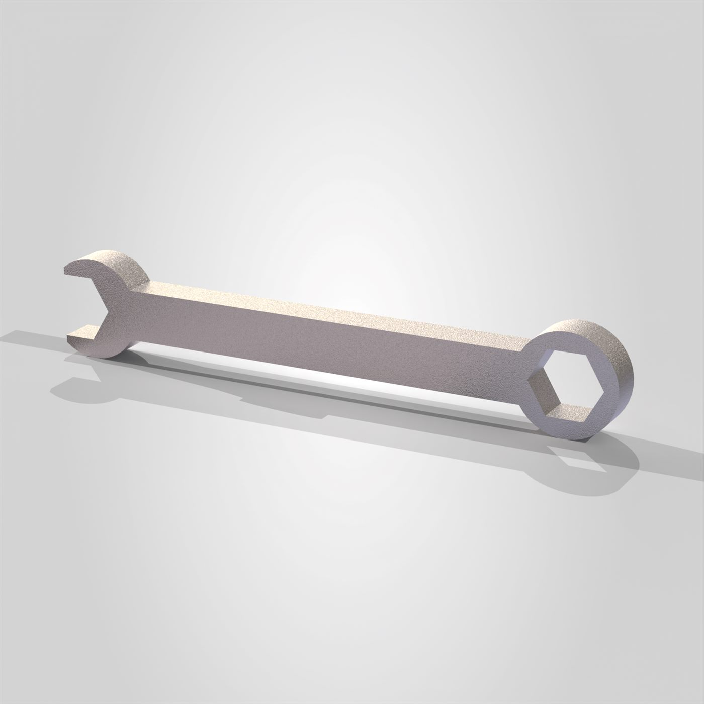
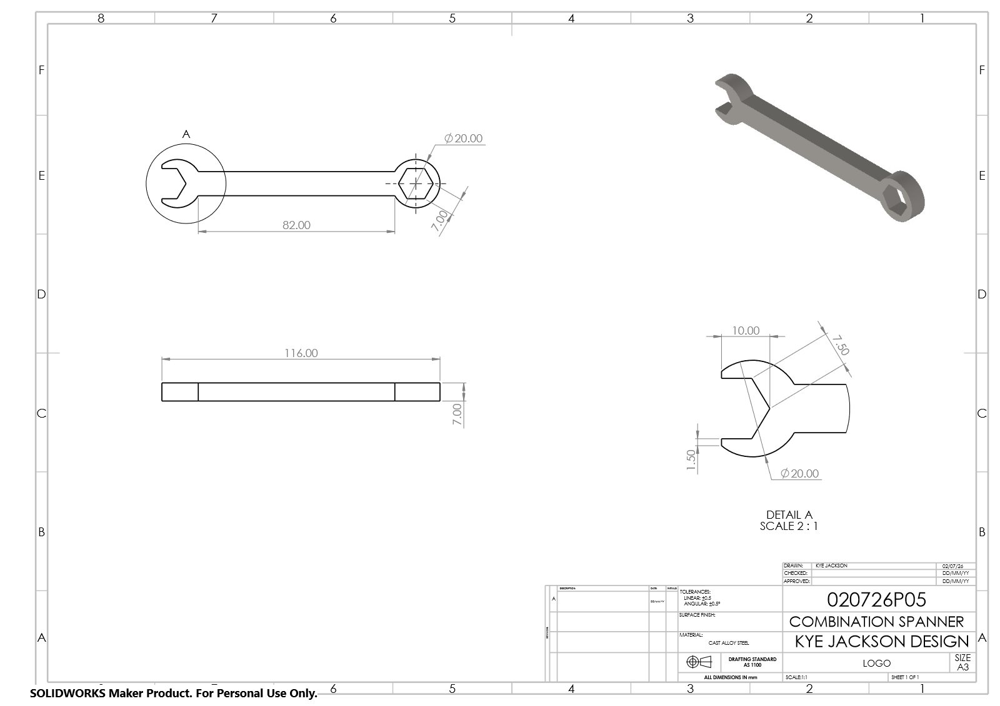
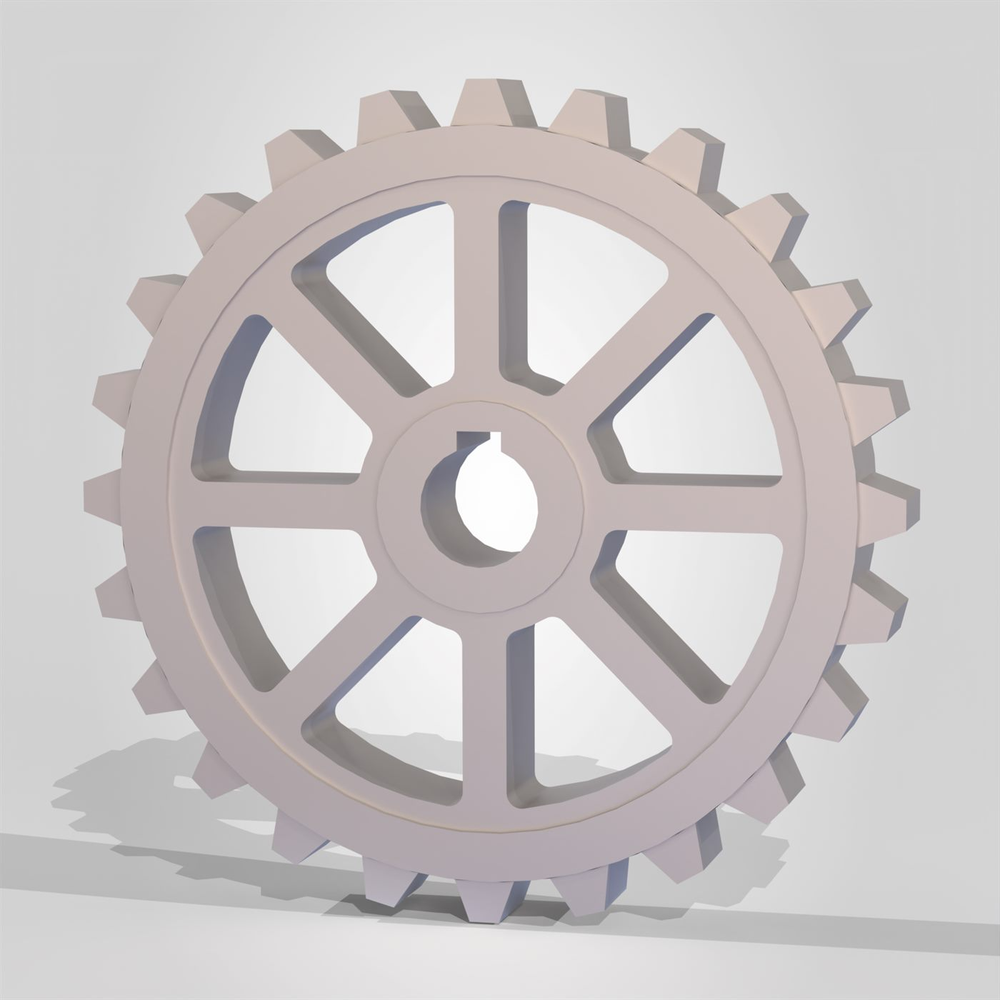
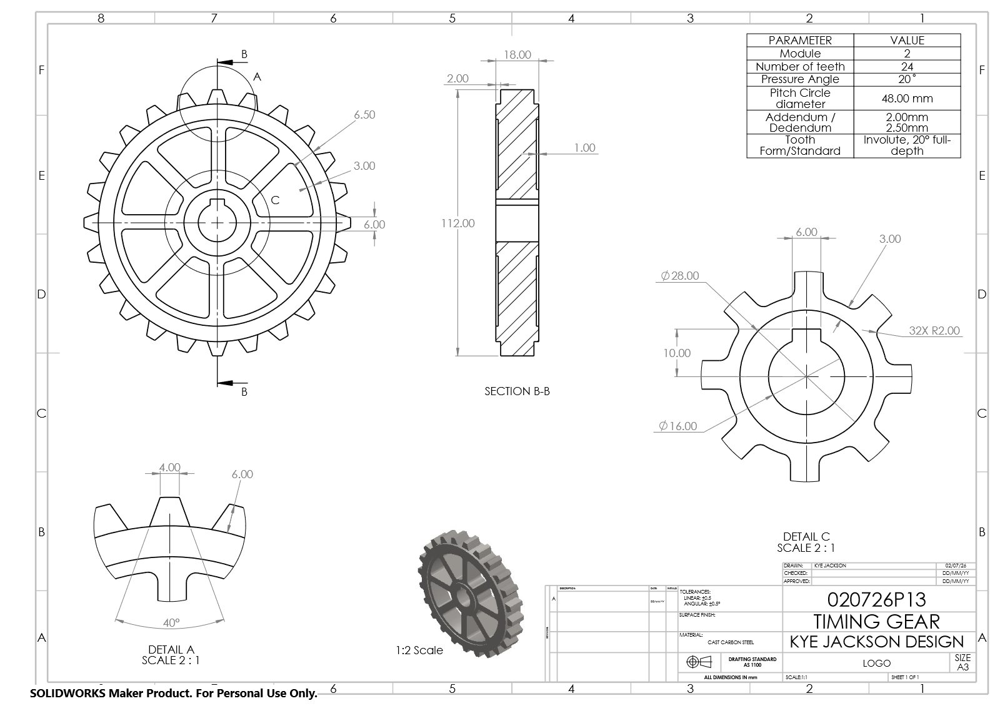
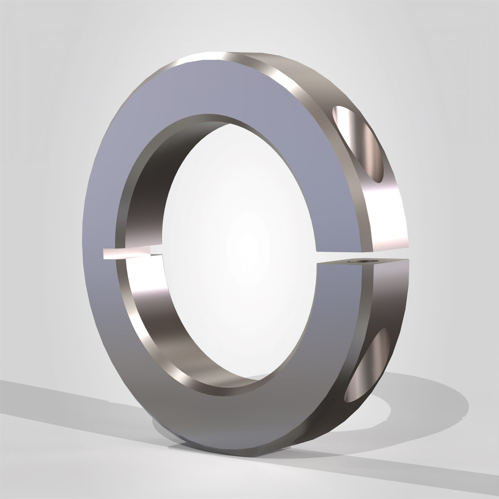
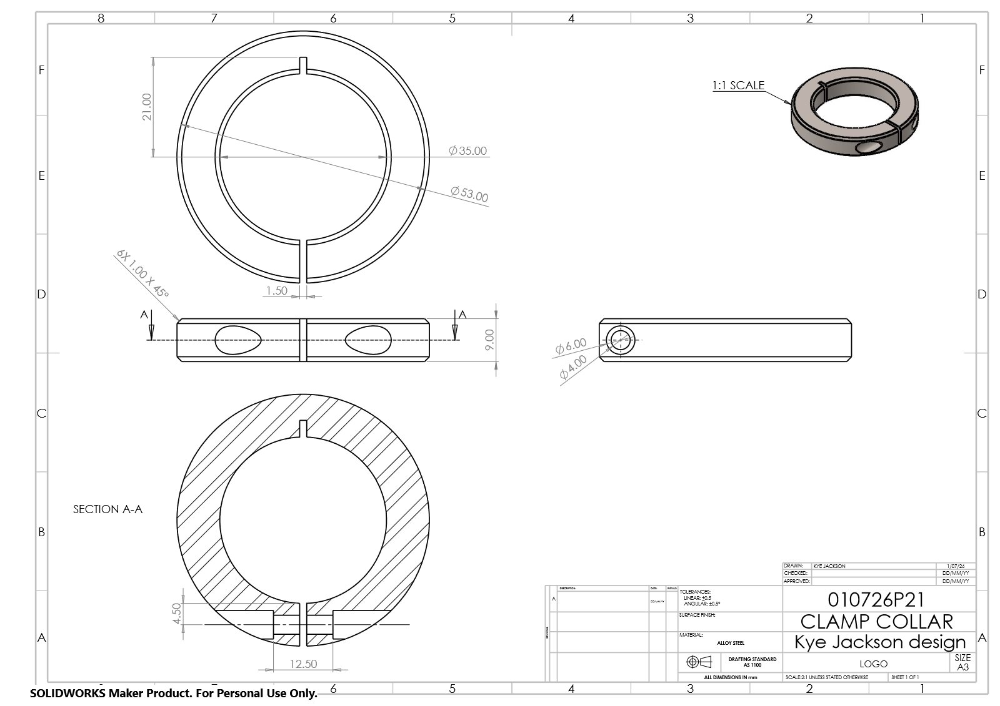
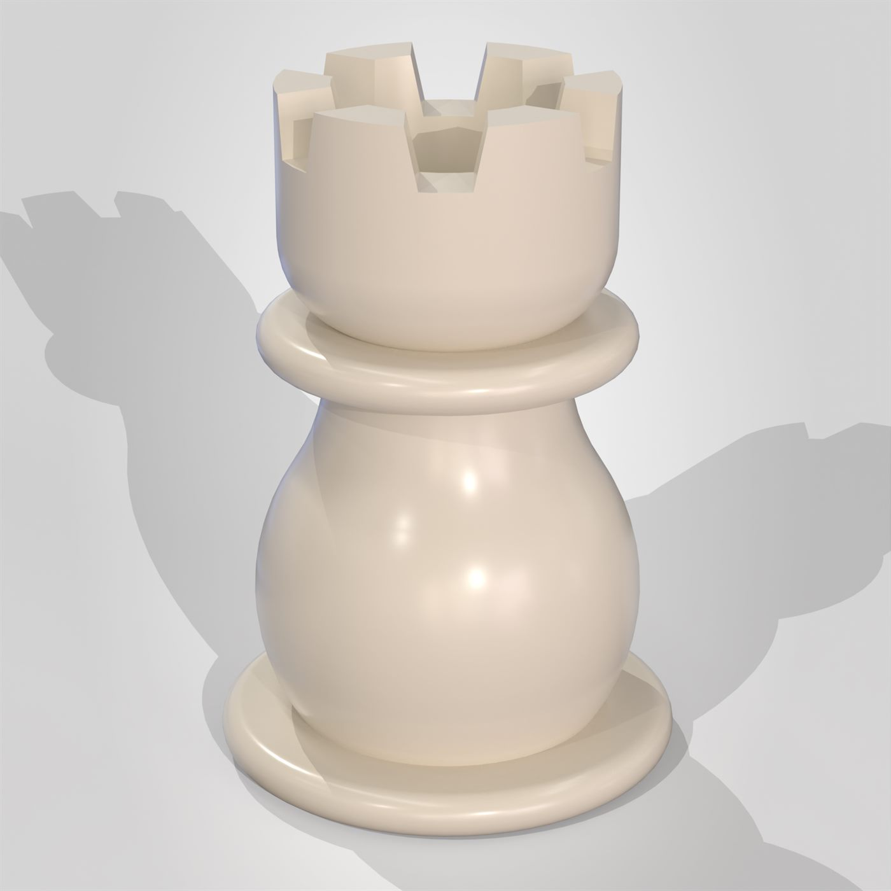
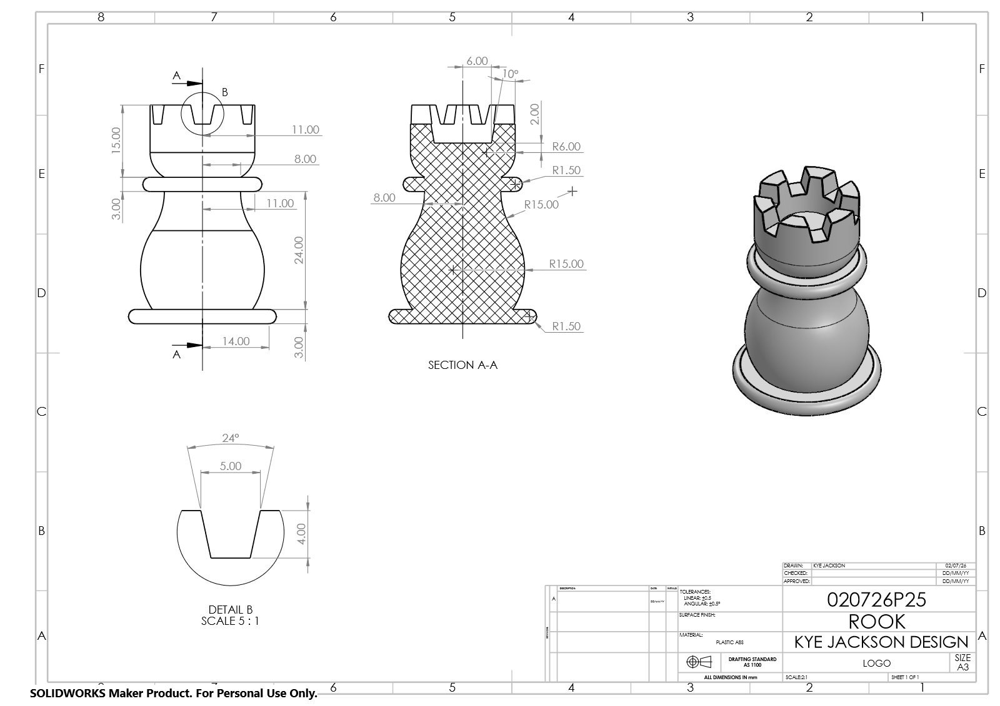
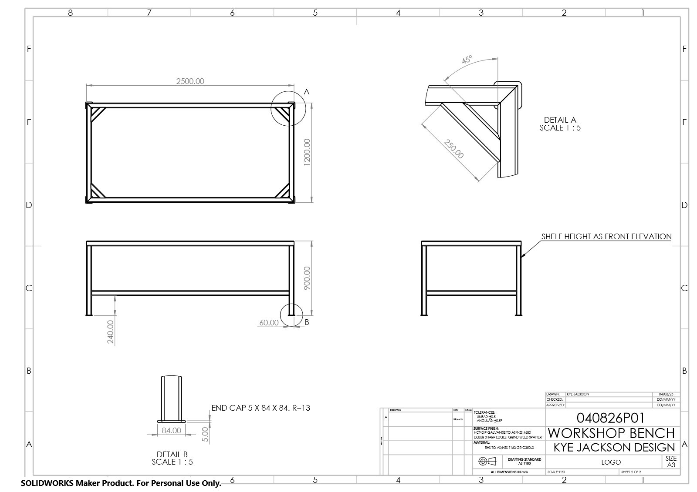

AS1100 Technical
Drawing Set
A collection of fully dimensioned, standards-compliant engineering drawings modelled in SolidWorks and drafted to the AS1100 Australian technical drawing standard — spanning small machined components, a plastic part, and a full structural steel weldment.
Overview
This set was built to practise reading and producing drawings to the AS1100 standard — the drafting convention used across Australian engineering and manufacturing. Each sheet follows a consistent A3 title block of my own design ("Kye Jackson Design"), with drawn/checked/approved fields, tolerancing (linear ±0.5, angular ±0.5°), material callouts, and drawing numbers.
The set moves across a deliberate range of drafting challenges: a machined combination spanner, a cast timing gear with full gear-parameter tables, a turned clamp collar, an injection-moulded chess rook, and — the most involved sheet — a two-page structural steel workshop bench weldment with a full bill of materials and welding callouts to AS/NZS 1554.1.
Combination Spanner
A cast alloy steel combination spanner — 116mm long, 7mm thick, with an 82mm centre distance between the open jaw and the 20mm across-flats hex ring. Drawn 1:1 with a 2:1 detail view of the open-end jaw.
{kind=link}

Render

Dwg. 020726P05 Open PDF ↗
Timing Gear
A cast carbon steel timing gear carrying a full parameter table on the sheet: module 2, 24 teeth, 20° pressure angle, 48mm pitch circle diameter, 2.00/2.50mm addendum and dedendum, involute 20° full-depth tooth form. Drawn with a section through the rim and 2:1 details of the tooth flank and the keyed hub.
{kind=link}

Render

Dwg. 020726P13 Open PDF ↗
Clamp Collar
An alloy steel split clamp collar — Ø53mm outside, Ø35mm bore, 9mm wide, with a 1.50mm split and six 1.00 × 45° chamfers. Drawn at 2:1 with a full section view through the counterbored Ø6/Ø4 clamping screw holes.
{kind=link}

Render

Dwg. 010726P21 Open PDF ↗
Chess Rook
An ABS plastic rook, 45mm tall on a Ø14mm base, with the body built from opposing R15 sweeps and R1.50 bead edges. Drawn at 2:1 with a full section through the piece and a 5:1 detail of the 24°, 5mm-wide crenellation slots — the only purely geometric part in the set, included to practise curve-heavy dimensioning.
{kind=link}

Render

Dwg. 020726P25 Open PDF ↗
Workshop Bench Weldment
The most complex sheet in the set: a two-page structural steel workshop bench, welded from 60x60x4 RHS to AS/NZS 1163 Grade C350L0 and hot-dip galvanised to AS/NZS 4680. Drawn at 1:20 with a full item/quantity/angle/length bill of materials, all-round 6mm fillet welds specified to AS/NZS 1554.1 weld category GP, and 1:5 detail views of the corner bracket and end-cap.
Sheet 1 — Assembly & BOM Open PDF ↗

Sheet 2 — Elevations & details Open PDF ↗